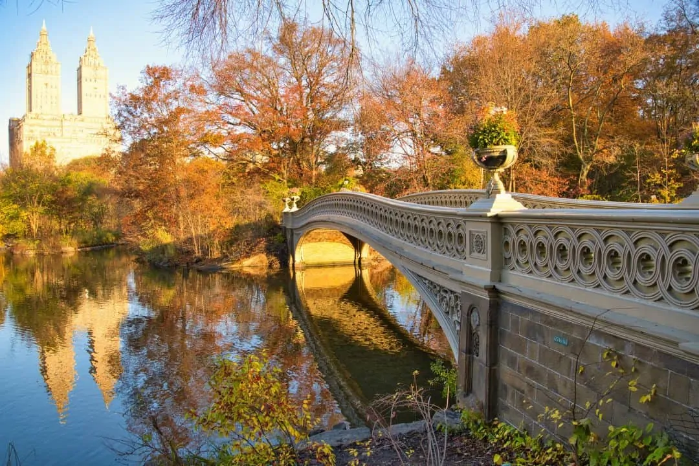
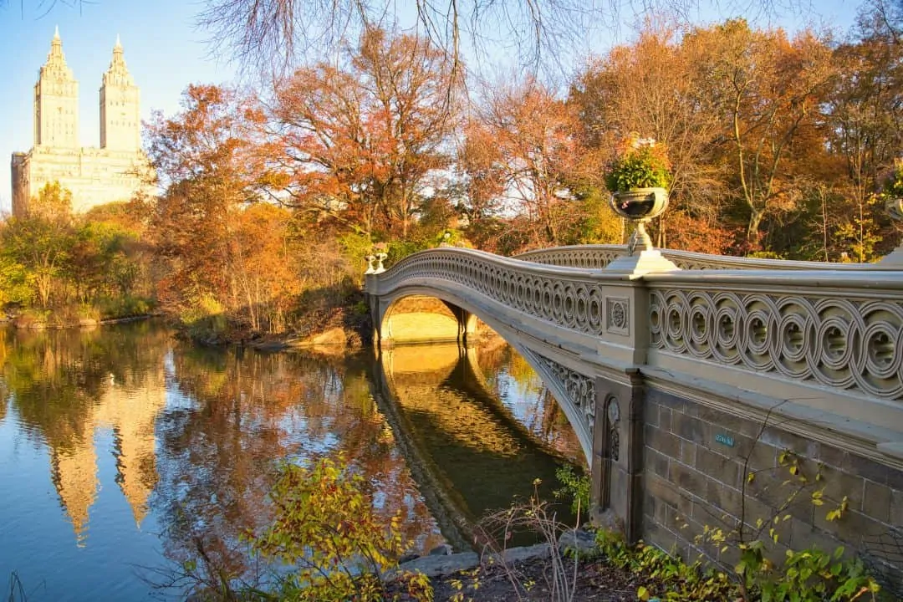

Times Square is a major commercial intersection, tourist destination, entertainment center, and neighborhood in Midtown Manhattan, New York. It is formed by the junction of Broadway, Seventh Avenue and 42nd Street. Together with adjacent Duffy Square, Times Square is a bowtie-shaped space five blocks long between 42nd and 47th Streets.
Central Park is an urban park in New York City, between the Upper West and Upper East Sides of Manhattan. It is the fifth largest park in the city, covering 843 acres (341 ha). It is the most visited urban park in the United States, with an estimated 42 million visitors annually as of 2016, and is the most filmed location in the world.